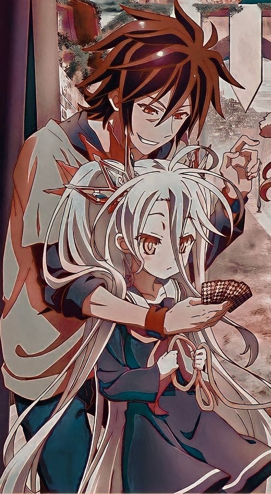
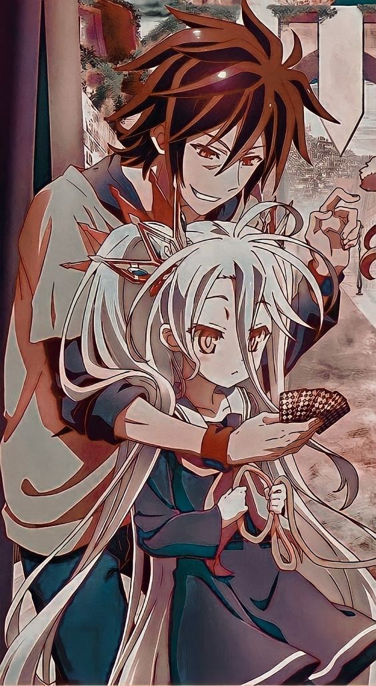

Sora et Shiro sont des frère et sœur (en réalité, de cœur) inséparables, autant dans la réalité que dans les jeux vidéo. En équipe, leurs compétences individuelles les rendent invincibles : Sora a une intuition astucieuse, une grande culture, une très grande intelligence et une perspicacité sans faille ; Shiro, quant à elle, possède une intelligence dépassant le génie. Dans le monde réel, ils sont des NEET et hikikomori2,3,4, reclus et asociaux. Dans le monde virtuel, ils jouent ensemble en tant que « » (en rapport avec le double sens réunissant leurs prénoms), une équipe mystérieuse de joueurs en ligne ne connaissant pas la défaite, finissant première à tous les jeux auxquels ils participent. Du fait que le nom de compte de leurs personnages soit toujours un espace vide, ils sont connus sous le nom des « Blancs » (空白, kūhaku?, litt. « espace blanc »). Un jour, après avoir battu un défieur inconnu à une partie d'échecs en ligne, Sora et Shiro reçoivent énigmatiquement une offre de leur adversaire : celle de renaître dans son monde, où tout est régi et décidé par les jeux. Sora et Shiro, fatigués de leur monde, acceptent sans s'en rendre compte sa proposition et sont alors immédiatement transportés dans l'univers fantaisiste de Disboard par son Dieu unique Tet, déité des jeux qu'ils viennent de battre, qui leur donne les Dix Serments de ce monde. Ensemble, Sora et Shiro entament ainsi leur voyage : d'abord, pour accéder au trône d'Immanity (la race humaine) ; puis, pour conquérir le reste des races de l’Exceed. Tout ceci, dans le but d'atteindre leur objectif : gagner à nouveau contre Tet et ainsi, obtenir le titre de Dieux uniques de ce monde.Il a une confiance absolue en lui et en ses capacités : sa rapidité d'esprit, son sens de la manipulation et sa logique tordue en font un joueur redoutable pour le monde entier. Quand il avait dix ans, Sora considérait les Humains stupides et faibles, mais sa rencontre précoce avec Shiro, à l'époque âgée de trois ans, a grandement influencé sa vision de l'humanité : dans le style d'un certain logotype bien connu de son monde, il arbore sur son maillot de corps en « T » l'inscription « I ❤アイ・ラブ 人類じんるい » (Ai Rabu jinrui?, stylisation pour « J'aime l'humanité »). Il est très protecteur envers Shiro et déterminé à l'élever correctement : en tant qu'asociaux dépendant affectivement l'un de l'autre, il perd totalement sa confiance en lui (ainsi que toute forme d'ego) et fait une crise d'angoisse sévère s'il est séparé ne serait-ce qu'un peu d'elle.Shiro est la cadette de onze ans, sœur de Sora. Elle a l'air mignonne mais a, tout comme son frère, un côté pervers. Elle est décrite par ce dernier comme étant une « beauté parfaite », bien qu'elle ait tout de même ses complexes. Elle est une véritable génie des mathématiques et probabilités : en ce domaine elle est considérée comme l'égal, sinon la supérieure de son frère. Elle a décidé de suivre Sora pour toujours : en tant qu'asociaux dépendant affectivement l'un de l'autre, elle sombre dans un état dépressif extrême et fait une crise d'angoisse sévère si elle est séparée ne serait-ce qu'un peu de lui, raison pour laquelle, nonobstant la contrainte ou la paresse, elle rechigne à prendre des bains.
 
